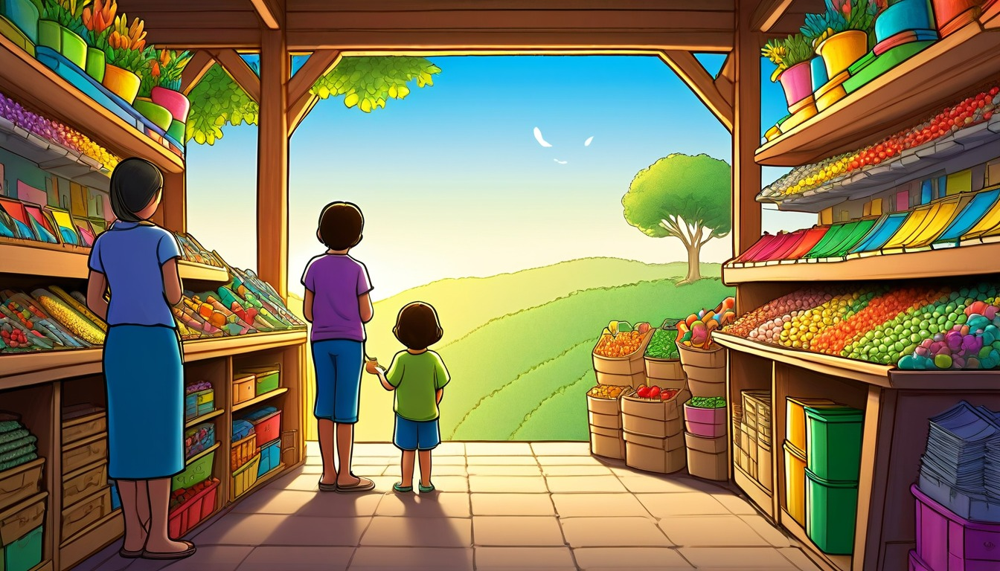

Ages 7-9
Acorn Avenue Errand Office
A desk inside a hollow acorn sorts tiny neighborhood errands: return a borrowed thimble, update the snack map, and deliver cheerful notes before the lunch bell.
Printable classroom writing license
Prompt cards, routines, extension activities, and a practical rubric for repeated short-story practice.
Best for: Elementary teachers, homeschool co-ops, tutors, and substitute folders serving reluctant writers ages 7-11.
Format: 30 printable prompt cards, five classroom routines, ten extension activities, and a four-criterion rubric
No scary harm, no bullying, no romance, no weapons, no branded characters, no real child profiles.
Teacher setup
A desk inside a hollow acorn sorts tiny neighborhood errands: return a borrowed thimble, update the snack map, and deliver cheerful notes before the lunch bell.

Inventors bring almost-working ideas to a workshop where revision is treated like testing, adjusting, and trying again.

On Binding Day, young authors prepare finished pieces for a boardwalk showcase with covers, blurbs, pages, and author notes.

A bakery the size of a lunchbox sells button-shaped rolls, and every customer gets a crumb map to the next helpful errand.

A pocket-sized train circles a library tree and stops at shelves that grow new questions overnight.

A clocktower above the town grows berries that keep time, but the breakfast hour has gone missing.

Inside a tall museum of everyday objects, each exhibit opens when its short label explains the one clue visitors should notice.

At a school for story cartographers, students learn to plan routes before writing the journey.

Behind the school garden is a greenhouse where friendly gears turn compost drums, lift watering cans, and open roof vents whenever seedlings need more air.

A tabletop theater club uses index cards, cue lights, and tiny stage pieces to turn scattered scenes into one clear performance plan.

At a bustling market for feedback, every stall trades clear margin notes that help writers make the next draft stronger.

A tiny night market opens whenever the moon smells cinnamon, and every stall sells a pastry with a secret job.

A quiet forest observatory studies moss patches that change shade after rain, leaving soft patterns for careful observers to sketch in field notebooks.

In a sunny kitchen pantry, measuring spoons, recipe cards, and labeled jars help young bakers solve why every batch of morning muffins rises to a different height.

Young pencil dragons learn to sketch doors, revise maps, and erase mistakes without erasing the lesson.

A cheerful compass shop on Penny Path rents button compasses to kids who need to find tiny errands hiding between snack stands and mailbox rows.

A park small enough to fit in a jacket pocket uses a notice board for seed swaps, bench reservations, picnic lists, and cheerful cleanup reminders.

After rain, sidewalk puddles become tiny planets where cheerful mail carriers deliver messages in bottle caps.

A pair of rain boots becomes a traveling route office whenever puddles appear, helping tiny shopkeepers choose dry paths for deliveries.

A tiny railway crosses a backyard weather station, carrying raindrop samples, cloud notes, and garden alerts between labeled posts after every shower.

A paper ferry carries young editors between draft islands, where every stop reveals a stronger way to shape a story.

Inside a community seed library, drawers open onto maps showing where beans climbed, carrots curved, and sunflowers turned their faces through the season.

On a bright meadow table, kids test cardboard solar ovens that warm snacks by angle, timing, shiny panels, and careful notes instead of plugs.

At Lunchbox Harbor, spoon ferries carry menu cards, snack orders, and polite dockside dialogue between tiny cracker cafes.

Inside a blue teacup, a tiny town checks the weather through a spoon-shaped window and plans errands around drizzle, sunbeams, and toast-scented fog.

At the edge of a quiet bay, a floating field lab keeps track of tide minutes, shell shadows, and which tiny pools refill first after the moon tugs the water.

Under a dock, tiny lanterns guide paper boats through a reef made of lost buttons and sea glass.
Teacher tools
The draft includes observable nouns, actions, and sensory details a reader can picture without teacher explanation.
The reader can follow what happens first, next, after the character's choice, and at the end.
The character makes a visible decision that changes what happens next in the story.
The student can point to a specific change made after rereading, feedback, or teacher conference.
Teacher tools
Teacher: Read one prompt card aloud, then send students to notice three classroom-safe details they can borrow for the setting.
Output: A three-item detail bank with one color, one texture, and one tiny action ready for a story draft.
Teacher: Give pairs four blank strips and ask them to arrange a clear beginning, middle, choice, and ending before writing.
Output: A taped four-strip sequence plan with order words and one sentence on each strip.
Teacher: Pause after the story problem and chart two kind, practical choices the character could make.
Output: A short paragraph explaining the chosen path and one result that follows from it.
Teacher: Invite students to sketch a simple setting map and label quiet, busy, soft, and surprising sounds.
Output: A labeled setting map plus two sentences that use sound to make the scene clearer.
Teacher: Model one polite question and one helpful answer, then have partners build a tiny exchange for their characters.
Output: Four lines of dialogue with speaker names and one action tag that shows what a character is doing.
Teacher: Name five ordinary story objects and ask students to sort them into helpful, confusing, or clue categories.
Output: A three-column prop sort with one sentence explaining how one object changes the story.
Teacher: Ask students to mark one draft spot with add, move, replace, or explain, then make only that revision.
Output: One revised sentence and a sticky note naming the exact revision move used.
Teacher: List three ending types: solve it, learn from it, or invite the next adventure, then let students test all three.
Output: Three possible endings for the same draft, with a star beside the clearest ending.
Teacher: Give each partner one question stem: What did the character notice, choose, change, or wonder?
Output: One partner question answered in writing and one draft detail improved because of it.
Teacher: Meet with small groups and record one rubric strength plus one next move for each student while the rest complete card-based drafting.
Output: A conference slip with one strength, one revision target, and a completed draft section.
Describe Acorn Avenue on a busy errand morning so a reader can picture where your helper is going.
Post this card at a writing station and ask students to circle one route choice before drafting.
The first place my helper sees is ____________________
A tiny sign on the route says ____________________
The path feels busy because ____________________
One extra setting detail I will add is ____________________
Ask partners to point to the clearest place detail without correcting the draft.
Have students sketch a two-stop map and label one detail from their writing.
Look for: The draft includes at least two concrete place details that match the chosen route.
Write about a bakery helper who must choose the best way to fix a mixed-up crumb map.
Give students thirty seconds to choose a bakery job before they write the scene.
My helper notices the map problem when ____________________
The choice my helper makes is ____________________
This choice is smart because ____________________
Another choice my helper could try is ____________________
Invite students to read only the sentence that explains why the choice makes sense.
Students trade cards and list one kind consequence of a different choice.
Look for: The writing names a clear character choice and gives a reason for it.
Create a Teacup Town forecast scene that shows what happens first, next, and last.
Ask students to number the three choices before completing the writing lines.
First, the weather watcher sees ____________________
Next, the town changes its plan by ____________________
After that, my character helps by ____________________
Last, the forecast note says ____________________
Have partners hold up one, two, and three fingers as the sequence is read.
Students add a fourth step that still fits the order of the scene.
Look for: The draft uses sequence language to show events in a logical order.
Write a friendly conversation about which notice should go on the Pocket Park board first.
Model one spoken line with quotation marks before students write their own park notice conversation.
The first speaker says ____________________
The second speaker answers ____________________
The notice board question is ____________________
The conversation helps because ____________________
Let pairs read the two spoken lines quietly using classroom voices.
Students revise one line so it sounds more like the speaker who says it.
Look for: The dialogue includes two speakers and moves the notice-board problem forward.
Help the compass shop owner revise a confusing direction into a sentence travelers can follow.
Ask students to draft one quick direction sentence, then improve it with a clearer clue.
My first direction sentence is ____________________
The confusing part is ____________________
I can make it clearer by adding ____________________
My revised direction sentence is ____________________
Ask students to show a partner only the before-and-after change.
Students underline the exact words they added during revision.
Look for: The revised sentence is more specific than the first sentence.
Describe a Rain Boot Route Rangers walk using safe sound, sight, or touch details.
Read the choices aloud and have students pick one sense to emphasize in their route description.
My route begins with this sound ____________________
The brightest thing I see is ____________________
The path feels like ____________________
The sensory detail that helps most is ____________________
Invite students to read one sensory phrase while classmates listen for the sense used.
Students add one color word and one texture word to the same scene.
Look for: The writing uses at least two sensory details connected to the route.
Write about a tidepool lab note that does not match and how the timekeepers solve it calmly.
Have students mark P for problem and S for solution beside their lines after writing.
The lab problem begins when ____________________
The clue that helps is ____________________
The timekeepers solve it by ____________________
The lab is ready again because ____________________
Ask partners to identify the problem sentence and the solution sentence.
Students add a labeled diagram that shows the clue used to solve the problem.
Look for: The writing states a problem and a matching solution.
Write an ending for a greenhouse story where the helper decides what the gears should do next.
Ask students to choose the ending mood before drafting the final four lines.
At the end, the greenhouse helper chooses ____________________
The gears respond by ____________________
The plants show the ending is working when ____________________
My final sentence will leave the reader thinking ____________________
Let students name their ending mood before reading the final sentence.
Students write a second possible ending with a different mood.
Look for: The ending choice fits the greenhouse problem and gives the scene a clear finish.
Tell a pantry mystery moment using different kinds of sentences so the writing does not sound the same each time.
Write short, medium, and question on the board before students complete the pantry scene.
My short sentence is ____________________
My longer detail sentence is ____________________
My question sentence is ____________________
The sentence I like best is ____________________
Ask students to read two sentences and let a partner name how they are different.
Students reorder their sentences and choose which order sounds clearest.
Look for: The draft includes at least two sentence lengths or sentence types.
Prepare one Rain Gauge Railway sentence you are comfortable sharing with a partner or small table group.
Use this card after a five-minute quickwrite and set a timer for quiet partner sharing.
The sentence I might share is ____________________
The part I want listeners to notice is ____________________
One question I can ask a partner is ____________________
One kind response I can give is ____________________
Students may read one sentence, point to one line, or pass while still listening.
Students use one partner response to add a clearer rain or railway detail.
Look for: The student prepares a shareable sentence and participates in a respectful response routine.
Describe the seed library map room so a classmate can picture where the hidden garden note belongs.
Place three seed packets or blank index cards at the writing table and ask students to point to one map-room detail before they write.
The first place I notice in the map room is ____________________
A tiny object on the table looks like ____________________
The map clue is tucked beside ____________________
My setting helps the story because ____________________
Ask partners to trade papers and underline one detail they can picture clearly.
Students add a small map label in the margin and write one sentence explaining it.
Look for: The student includes at least three concrete setting details tied to the story task.
Help the picnic team choose a fair fix when one solar oven warms a snack faster than the others.
Draw a quick three-step test chart on the board with problem, try, and result columns.
The picnic station problem is ____________________
My hero tries this first fix: ____________________
The result shows ____________________
The fair solution for the team is ____________________
Have students read only their solution sentence to a table partner.
Students sketch a before-and-after test card with one label for each change.
Look for: The student names a clear problem and connects the solution to evidence from the scene.
Write a calm observatory scene where moss details help your hero understand a nature message.
Invite students to list quiet forest words for sight, touch, sound, and smell before drafting.
The moss looks ____________________
The observatory air feels ____________________
A quiet sound nearby is ____________________
The sensory clue tells my hero ____________________
Invite volunteers to share one sensory word, not the whole paragraph.
Students revise one plain word into a more exact sensory word.
Look for: The student uses sensory details that make the observatory scene more specific.
Write a short dockside conversation that helps the spoon ferry deliver the right lunchbox order.
Model one polite question and one helpful answer on the board before students write their own lines.
The ferry cook asks this question: ____________________
The dock helper answers with: ____________________
My hero says this polite line: ____________________
The conversation solves ____________________
Partners read the three spoken lines in quiet voices and check whether the order makes sense.
Students add one action tag that shows who is speaking without using a name.
Look for: The student writes dialogue that sounds polite and moves the scene forward.
Decide which exhibit label your curator should write first so visitors notice the best clue.
Show students how a museum curator chooses one clue to place first and one clue to save for later.
My curator chooses the exhibit called ____________________
The label should mention ____________________
The curator waits to reveal ____________________
This choice helps visitors because ____________________
Students hold up one finger for first, second, or third clue choice before discussing with a partner.
Students write a second version of the label for younger museum visitors.
Look for: The student explains a character choice with a reason connected to the visitor experience.
Plan the order of stops for a craft-academy map route that leads to a finished story project.
Give students three sticky notes or paper scraps so they can physically order the route before writing.
First, my map route goes to ____________________
Next, the compass points toward ____________________
After that, my hero checks ____________________
The final stop is important because ____________________
Students compare only their first and final stops with a nearby writer.
Students add transition words above each line and read the route again.
Look for: The student uses ordered steps that make the route easy to follow.
Test an almost-invention by writing sentences that do not all start or sound the same.
Write a short sentence, a longer because sentence, and a question sentence on the board as examples.
My short sentence: ____________________
My because sentence: ____________________
My question sentence: ____________________
My best invention sentence is ____________________
Ask students to star the sentence type they used least and share that one with a partner.
Students combine two short sentences into one smoother sentence.
Look for: The student tries at least three sentence patterns while staying on the same invention idea.
Write an ending for Binding Day that shows how the finished booklet is shared in the classroom.
Ask students to choose whether their booklet ending should feel helpful, funny, or thoughtful before they write.
At the boardwalk table, the finished booklet shows ____________________
My hero chooses to end with ____________________
The class notices ____________________
The final sentence of my story is ____________________
Students read their final sentence only and let partners name the ending feeling.
Students draft a second ending with a different feeling and circle the stronger one.
Look for: The student writes an ending that matches the story action and leaves a clear final feeling.
Prepare a tiny theater-club share that lets a partner understand your scene without reading the whole story.
Arrange students in pairs and give each writer one index card for a scene title or favorite line.
My scene is called ____________________
One line I can share is ____________________
One prop or action that helps is ____________________
A kind question for my partner is ____________________
Partners share one card each, then say one thing they understood clearly.
Students add a tiny cue mark where a reader should pause.
Look for: The student selects a short shareable piece and responds to a peer with a kind question or comment.
Ride the revision ferry by changing one sentence so it becomes clearer and more interesting.
Tell students to pick one sentence from yesterday or from a quick draft and copy it onto the first line.
My first sentence is ____________________
The revision move I chose is ____________________
My revised sentence is ____________________
The revised version is clearer because ____________________
Students point to the changed word or phrase instead of reading the whole draft aloud.
Students make one more small revision and label it with the move they used.
Look for: The student makes a visible revision and can explain how the change improves the sentence.
Write about a moonlit muffin stall where your character notices one detail that helps the whole market run smoothly.
Place this card at a description station and ask students to add three market details before drafting.
The stall looks like ________________________________
The first helpful detail is ________________________________
My character notices ________________________________
The market feels ________________________________
Invite students to read only their strongest setting detail to a partner.
Have students circle one vague word and replace it with a more exact market detail.
Look for: The writing includes at least three concrete setting details tied to the market scene.
Write about a post office on Puddle Planet where your character must choose the fairest way to sort a mixed-up stack of cheerful notes.
Ask students to pick one delivery decision and explain why the character chooses it.
My character needs to choose ________________________________
One reason for this choice is ________________________________
Another choice could be ________________________________
The choice helps because ________________________________
Ask partners to name the choice they heard and one reason that made sense.
Add a thought bubble that shows what the character considers before deciding.
Look for: The writing names a clear character choice and gives a reason connected to the scene.
Write the order of events as a tiny library train carries book carts to the right reading rooms.
Have students number the four writing lines before they draft so the events stay in order.
First, the train ________________________________
Next, the book cart ________________________________
Then, the reading room ________________________________
Finally, everyone knows ________________________________
Have students swap cards and point to the word that shows each step in order.
Add one transition word to each line without changing the order.
Look for: The writing uses a clear beginning, middle steps, and ending in logical order.
Write a short conversation at Cloudberry Clocktower where two helpers calmly decide how to reset the snack-time chimes.
Model one line of polite dialogue, then have students write two speakers with different jobs.
One helper says ________________________________
The other helper asks ________________________________
My character answers ________________________________
The chimes sound ________________________________
Let pairs read the dialogue quietly, each taking one speaker's line.
Revise one line so it sounds more like the speaker's job.
Look for: The dialogue includes at least two speakers and moves the clocktower problem forward.
Revise a reef scene so readers can understand how the tiny lanterns guide a friendly sea parade.
Give students a first sentence to improve and ask them to revise for clarity rather than length.
My first sentence is ________________________________
One unclear word is ________________________________
I can make it clearer by adding ________________________________
My revised sentence is ________________________________
Ask students to share the one word or detail they changed, not the whole draft.
Use a colored pencil to underline the added revision detail.
Look for: The student identifies a specific change and improves clarity in the revised sentence.
Write about a Pencil Dragon Academy lesson where careful sense details help a student remember the next writing step.
Ask students to use at least two senses before writing the academy scene.
I can see ________________________________
I can hear ________________________________
I can feel or smell ________________________________
These details help because ________________________________
Invite students to trade cards and star one sensory detail they can picture clearly.
Add one more sense detail to the line that feels thinnest.
Look for: The writing uses two or more sensory details that fit the academy setting.
Write about a market in the margins of a notebook where tiny notes get out of order and your character finds a fair fix.
Have students state the market problem in one sentence before choosing a calm solution.
The problem is ________________________________
My character tries ________________________________
The solution works when ________________________________
The market learns ________________________________
Ask volunteers to read only the problem and solution lines as a quick pair check.
Draw a before-and-after margin note to show how the fix changes the market.
Look for: The writing connects a specific problem to a specific solution that fits the notebook market.
Write an ending for a pocket park story where the final notice helps everyone understand the shared plan.
Ask students to draft two possible endings and choose the one that best matches the park notice.
One ending could be ________________________________
Another ending could be ________________________________
I choose this ending because ________________________________
The final notice says ________________________________
Let students hold up one or two fingers to show which ending they chose before explaining.
Add a final sentence that shows how the park feels after the notice is read.
Look for: The chosen ending matches the earlier story problem and explains why it fits.
Write a greenhouse gear note using different kinds of sentences so the garden helpers can follow the plan.
Display short, medium, and question sentence examples before students draft the greenhouse note.
A short sentence: ________________________________
A longer sentence with a detail: ________________________________
A question sentence: ________________________________
My favorite sentence is ________________________________
Ask partners to tap once for a short sentence and twice for a longer sentence.
Revise one sentence beginning so not every line starts the same way.
Look for: The writing includes varied sentence lengths or types that remain clear.
Write a picnic station scene you can share with a partner, showing how the solar oven team prepares a fair test snack.
Set a two-minute partner share and remind students to respond with one noticed detail and one question.
The picnic team prepares ________________________________
The fair test detail is ________________________________
A detail I want my partner to notice is ________________________________
A question I can ask my partner is ________________________________
Partners give one quiet compliment about a clear detail and ask one curious question.
Add a peer suggestion box where the writer can choose one idea to try next.
Look for: The student prepares a shareable scene and includes a specific detail for peer response.